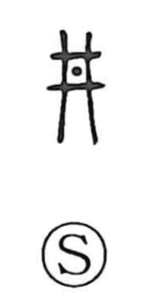

Explanation
Shirakawa sees 井 as a pictograph of the igeta, the crossed wooden crib that reinforces a well’s mouth. In antiquity this same lattice-like form was used broadly for framed or restraining structures: the shackle used in punishment, a pitfall for trapping people or animals, and the outer frame of a mold. These senses were later distinguished as separate characters—刑 for the shackle, 穽 (阱) for the pit, and 型 and 形 for the mold and form—where the old 井 shape was remodeled as 开 within them. To make the “well” meaning explicit, a ladle/pot sign was sometimes added, producing 丼, which in Japan came to denote the donburi bowl. From its original picture, 井 thus means a well and its wooden frame, and by extension could also refer to a settlement such as a village or town.